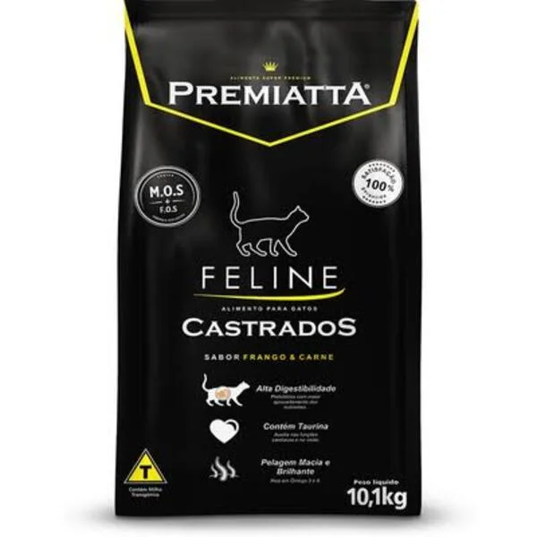

Ração Premiatta Feline Gatos Castrados 10,1kg

109,90
Descrição
- Ração
- Ração Premiatta Feline Gatos Castrados 10,1kg é um alimento completo e balanceado para gatos castrados.
Detalhes
- Marca
- Premiatta
- Sabor
- Frango
- Indicado para
- Gatos castrados
- Peso
- 10,1kg